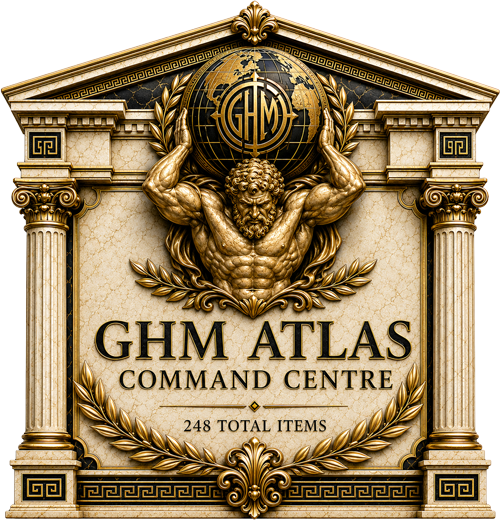

Bird’s-eye preview
Programme connections
Territories, work items and the strongest recorded relationships.
CompleteActiveReviewBlockedLater

GHM ATLAS
Opening the Atlas Command Centre Loading 877 internal recordsOverview 01 · Live Programme View
A live operational view of every territory, dependency, milestone and decision.
Programme signals
Whole project
Bird’s-eye preview
Attention
Forward action
Governance
Condensed workstream overview
Full territory register
| ID | Item | Status | Risk | Owner | Next action | Target date | Progress |
|---|
Bird’s-eye · Spatial View
| ID | Item | Territory | Status | Risk | Owner | Target date | Progress | Action |
|---|